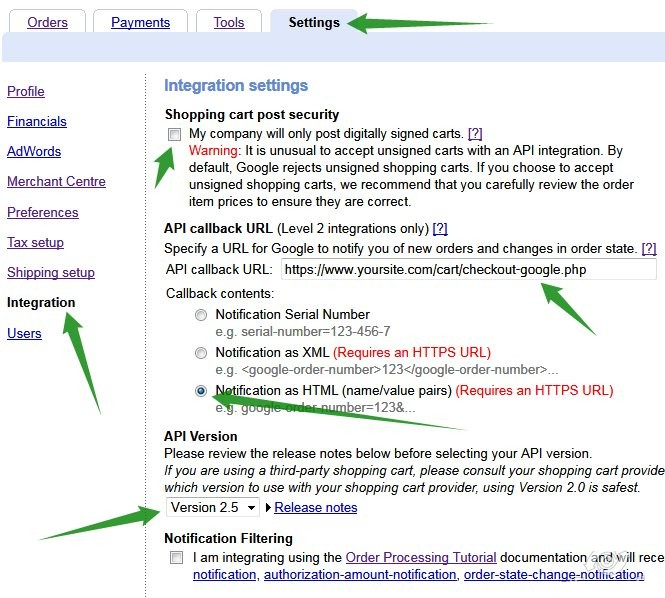
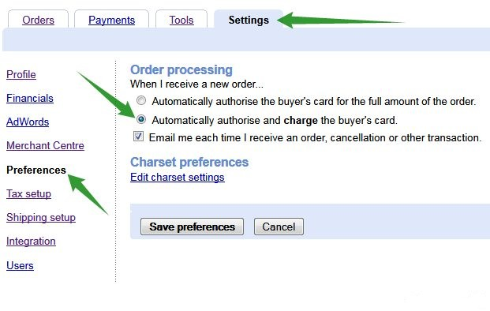
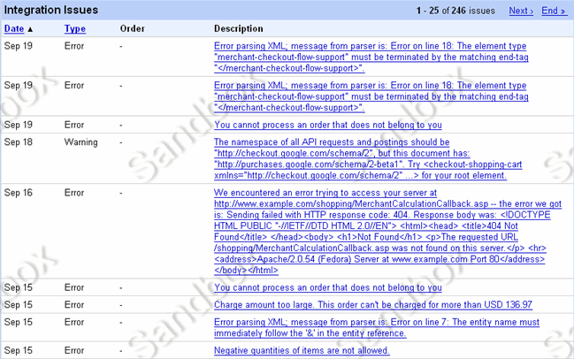

What is Google Checkout?
Google Checkout is an online payment processing service provided by Google aimed at simplifying the process of paying for online purchases. Users store their credit or debit card and shipping information in their Google Account, so that they can purchase at participating stores at the click of a button. Google Checkout also offers fraud protection, as well a unified page for tracking purchases and their status.
Google Checkout API
Google Checkout API integrates into existing websites letting your customers buy items from you quickly and securely using a Google username and password. Google Checkout lets you charge customers' credit cards, track orders through your fulfillment process and receive order payments in your bank account.
SSL Certificate
To utilise Google Checkout in Maian Cart your server MUST have a SSL certificate installed. It will NOT work otherwise. If this option is not available to you, Google Checkout MUST be disabled. There are a number of good SSL providers around. Many servers provide a shared certificate, but its recommended you install your own. If you aren`t sure how to install a SSL certificate, contact your hosting company who should be happy to help.
Enable Google Checkout API
1. Sign up for a Google Checkout account if you don`t already have one. This will provide you with a merchant key
and merchant ID.
2. Access your Google Checkout account and click 'Settings' then 'Integration' from the left hand menu.

3. Uncheck the option 'My company will only post digitally signed carts'. Maian Cart is not required to be a digitally signed cart. The idea of digitally signed carts is to check that no data was tampered with during transmission to Google. Maian Cart performs the necessary security checks on all transactions and checks payment totals, currency codes etc. If post data was faked
to adjust payment totals for example, Maian Cart will reject the transmission.
4. Enter the following 'API callback URL':
http://www.yoursite.com/cart/checkout-google.php (Replacing the domain/path with your own correct path)
5. Select 'Notification as HTML' as the callback method.
6. Select 'Version 2.5' for the 'API Version'. If later versions are shown, choose the latest. If this doesn`t work, revert to 2.5
7. Finally, leave 'Notification Filtering' unchecked. Your screen should now look like the above.
Note: DO NOT add shipping or tax options, these are handled by Maian Cart
Next, from the left hand menu select 'Preferences'.

1. Check the radio button to 'Automatically authorise and charge the buyer's card.'. If you select the first option the buyers card will only be charged once you authorise the payment. This means
that on returning to the store from Google Checkout, buyers will never see their downloadable goods. The first option is not recommended if you are selling downloadable goods.
NOTE: If you do prefer the first option you should enable the 'GC_CHARGEABLE_EMAILS' option in the 'control/defined.inc.php' file to send out pending emails. This will instruct the buyer that their order won`t be finalised
until payment has been accepted.
2. Maian Cart sends out order notification e-mails, but as a precautionary measure keep the 'Email me each time I receive an order, cancellation or other transaction' checked to receive e-mails
from the Google system.
3. 'Edit Charset Settings' can be ignored.
Google Checkout is now ready to go.
Enable Google Checkout as Payment Option in Maian Cart
Select 'Catalogue > Payment Methods'. Click the  icon and launch the Google Checkout configuration window. Complete the options shown
to activate Google Checkout. More info as follows:
icon and launch the Google Checkout configuration window. Complete the options shown
to activate Google Checkout. More info as follows:
Merchant ID
Your Google Checkout production or sandbox merchant ID.
Merchant Key
Your Google Checkout merchant key.
Information About this Payment Method
This is presented to visitors if they click for more info on the gateway on the checkout page. Optional. Use BB Code for formatting, HTML is not allowed.
Alternative Redirect Url (Optional)
Alternative redirect url is the page a visitor will be directed to after a successful transaction. You should NOT use this option if you sell downloadable items as visitors will not be able to download their products immediately after purchase.
Enter full url starting http://
Live Payment URL
Google Checkout`s live payment url. At the time of these docs it is:
https://checkout.google.com/api/checkout/v2/checkoutForm/Merchant/
This should not be changed unless altered by Google.
Sandbox Payment URL
Google Checkout`s sandbox payment url. At the time of these docs it is:
https://sandbox.google.com/checkout/api/checkout/v2/checkoutForm/Merchant/
This should not be changed unless altered by Google.
Enable Google Checkout
Enable / disable Google Checkout as payment option.
Google Sandbox
Google Checkout has a sandbox system for testing. This enables you to test the payment system without taking live payments. For this you need to have 2 Sandbox accounts. A merchant account and a buyer account. More information here:
Creating Sandbox Accounts
Once you have the Sandbox accounts set up you can use these for testing transactions via the store. Remember to enter your Sandbox Merchant ID/Key when testing and change to your live ID/Key when everything seems ok.
To activate in Maian Cart, set the payment mode to 'Test' on the 'System > General Settings > Global Payment Settings' page.
Google Checkout Test Mode
To activate in Maian Cart, set the payment mode to 'Test' on the 'System > General Settings > Global Payment Settings' page.
Passing Additional Payment Parameters
Maian Cart allows you to specify additional payment parameters besides the required system ones. This maybe useful if you need to pass a certain parameter to any gateway during
purchase. Some gateways have many parameters that enable/disable functions on the checkout page. To add addtional parameters for Google Checkout, enter array key => value pairs in the following file:
classes/gateways/inclusions/google.php
Performing Additional Actions After Successful Payment
Maian Cart allows you to perform additional actions after a successful transaction. This is useful if you need to execute additional code after the payment has been accepted. Edit the following file:
classes/gateways/triggers/google.php
This is for advanced users.
Integration Console
Google Checkout provides a handy integration console which logs any errors received from the website. An example is shown below:

To access this console, click 'Tools' > 'Integration Console' in your Google Checkout account area.
Help Tips
The same or additional information may be provided by hovering your cursor over the  image next to each heading in the admin area if applicable.
image next to each heading in the admin area if applicable.